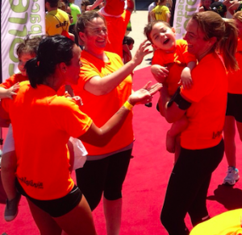

Que el deporte es bueno para la salud no cabe duda, pero ¿el running agranda el corazón? Nosotros el domingo pasado pudimos comprobar que sí.
Cuando nos enteramos de que AVAPACE (Asociación Valenciana de Parálisis Cerebral) y el Club de Atletismo Avapace Corre organizaban unas carreras, no dudamos en inscribirnos y prestarles nuestro apoyo, más cuando la causa es tan bonita como la lucha por la integración de las personas con parálisis cerebral a través del running. Y todavía más cuando este tema nos toca de lleno, ya que uno de los peques de la casa nació con una lesión cerebral.
Tenemos que dar las gracias a toda la organización por el cariño con el que nos trataron, sus mensajes de ánimo cuando los 10 km se nos hacían demasiado largos y el cansancio no nos dejaba seguir, pero sobre todo por la labor tan bonita que hacen. Ver cómo los niños eran los protagonistas y disfrutaban de su fiesta rodeados de familiares, amigos y de tanta gente apoyándoles fue muy emotivo. Teníamos los sentimientos a flor de piel y una vez más se nos saltaron las lágrimas.

Celebración final de la carrera
Queremos dar las gracias también a todos los que nos habéis apoyado desde las redes sociales, y por supuesto, a todos los que nos acompañasteis en la carrera arropando a Luis y demostrándonos vuestro cariño hacia él.
Nos sentimos muy afortunados, y aunque en un principio sufrimos mucho, ahora Luis es la alegría de la casa. Día a día nos da lecciones de superación, nos demuestra que con esfuerzo y mucho trabajo se puede conseguir cualquier cosa…¡Incluso correr 10 km a 34ºC! Pero sobre todo, nos ha enseñado a ver el lado bueno de las cosas. Si algún día os sentís tristes y queréis darle la vuelta a la tortilla os recomiendo que visitéis luisserram.com donde seguro que encontraréis una razón para ser felices ¡Nosotros la hemos encontrado! 🙂